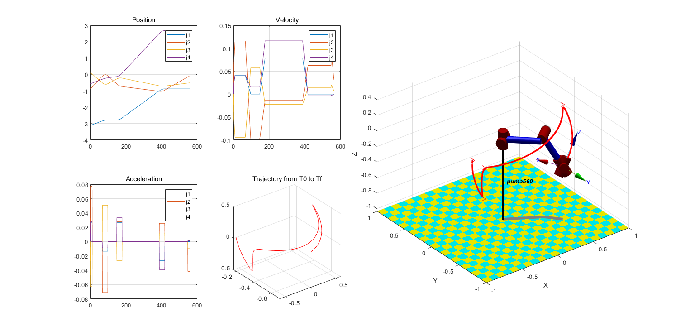

Contents
clear;clc;close all
addpath(genpath('demo'),genpath('my_trajectory_plan'))
demo_ik_fk=0;
demo_show_forward=0;
demo_show_inverse=0;
demo_bring_cup_with_matlab_jtraj=0;
demo_my_trajectory_plan=1;
if demo_ik_fk+demo_show_forward+demo_show_inverse+demo_bring_cup_with_matlab_jtraj+demo_my_trajectory_plan>1
error('run one function one time 一次运行一个选项')
end
demo_csdn=0;
测试inverse kinematics 和 forward kinematics
if demo_ik_fk
joint_rads=[50 70 90 20 32 50]/180*pi;
test_ik_fk(joint_rads);
end
if demo_show_forward
joints = [30 25 -90 50 70 -80];
show_forward(joints);
end
if demo_show_inverse
T=[ 0 0.5736 0.8192 -0.3590; ...
0 -0.8192 0.5736 -0.1784; ...
1.0000 0 0 -0.0142; ...
0 0 0 1.0000];
show_inverse(T);
end
if demo_bring_cup_with_matlab_jtraj
bring_cup_with_matlab_jtraj();
end
if demo_my_trajectory_plan
bring_cup_with_my_trajectory();
end
test_joints =
-3.1019 -0.8608 0.1008 -0.5611 3.1179 2.5933
ans =
'no: 1 norm 5.21'
ans =
'no: 1 change_degs 7.20'
test_joints =
-3.1019 -5.4224 2.9485 2.5104 2.0449 -0.3756
ans =
'no: 2 norm 7.64'
ans =
'no: 2 change_degs 13.94'
test_joints =
-5.7281 2.2808 0.1008 -0.0220 2.0841 -0.0156
ans =
'no: 3 norm 6.51'
ans =
'no: 3 change_degs 9.17'
test_joints =
-5.7281 -2.2808 2.9485 -2.2974 2.4426 -2.6278
ans =
'no: 4 norm 8.05'
ans =
'no: 4 change_degs 14.64'
test_joints =
-3.1019 -0.8608 0.1008 2.5805 -3.1179 5.7349
ans =
'no: 5 norm 7.72'
ans =
'no: 5 change_degs 9.78'
test_joints =
-3.1019 -5.4224 2.9485 5.6519 -2.0449 2.7660
ans =
'no: 6 norm 9.57'
ans =
'no: 6 change_degs 16.70'
test_joints =
-5.7281 2.2808 0.1008 3.1196 -2.0841 3.1259
ans =
'no: 7 norm 7.87'
ans =
'no: 7 change_degs 12.27'
test_joints =
-5.7281 -2.2808 2.9485 0.8442 -2.4426 0.5138
ans =
'no: 8 norm 7.32'
ans =
'no: 8 change_degs 12.86'
test_joints =
-2.7792 0.0660 -0.6534 -0.2278 2.7885 2.9853
ans =
'no: 1 norm 1.38'
ans =
'no: 1 change_degs 2.53'
test_joints =
-2.7792 1.0313 -2.5805 1.4956 2.8883 -1.6490
ans =
'no: 2 norm 5.76'
ans =
'no: 2 change_degs 8.16'
test_joints =
-5.4730 2.1103 -0.6534 -1.7384 2.6371 -1.7722
ans =
'no: 3 norm 5.97'
ans =
'no: 3 change_degs 9.11'
test_joints =
-5.4730 3.0756 -2.5805 -2.2366 2.1234 -2.7493
ans =
'no: 4 norm 7.79'
ans =
'no: 4 change_degs 13.00'
test_joints =
-2.7792 0.0660 -0.6534 2.9138 -2.7885 6.1269
ans =
'no: 5 norm 7.81'
ans =
'no: 5 change_degs 8.46'
test_joints =
-2.7792 1.0313 -2.5805 4.6372 -2.8883 1.4926
ans =
'no: 6 norm 8.67'
ans =
'no: 6 change_degs 11.05'
test_joints =
-5.4730 2.1103 -0.6534 1.4032 -2.6371 1.3694
ans =
'no: 7 norm 7.31'
ans =
'no: 7 change_degs 10.57'
test_joints =
-5.4730 3.0756 -2.5805 0.9050 -2.1234 0.3923
ans =
'no: 8 norm 7.92'
ans =
'no: 8 change_degs 13.44'
test_joints =
-2.7792 -0.7149 -0.1900 -0.1063 3.1006 3.0385
ans =
'no: 1 norm 0.97'
ans =
'no: 1 change_degs 1.49'
test_joints =
-2.7792 0.7149 -3.0439 2.3426 2.1626 -0.5477
ans =
'no: 2 norm 5.06'
ans =
'no: 2 change_degs 6.40'
test_joints =
-5.4730 2.4267 -0.1900 -0.3761 2.1617 -0.3040
ans =
'no: 3 norm 4.93'
ans =
'no: 3 change_degs 7.55'
test_joints =
-5.4730 3.8565 -3.0439 -2.1695 2.4037 -2.4769
ans =
'no: 4 norm 7.82'
ans =
'no: 4 change_degs 12.77'
test_joints =
-2.7792 -0.7149 -0.1900 3.0353 -3.1006 6.1801
ans =
'no: 5 norm 7.51'
ans =
'no: 5 change_degs 7.42'
test_joints =
-2.7792 0.7149 -3.0439 5.4842 -2.1626 2.5939
ans =
'no: 6 norm 7.96'
ans =
'no: 6 change_degs 8.57'
test_joints =
-5.4730 2.4267 -0.1900 2.7655 -2.1617 2.8376
ans =
'no: 7 norm 6.82'
ans =
'no: 7 change_degs 9.56'
test_joints =
-5.4730 3.8565 -3.0439 0.9720 -2.4037 0.6647
ans =
'no: 8 norm 7.82'
ans =
'no: 8 change_degs 13.23'
test_joints =
-0.8788 -1.0499 -0.7259 2.6846 1.0602 -2.0983
ans =
'no: 1 norm 6.51'
ans =
'no: 1 change_degs 7.76'
test_joints =
-0.8788 -0.1573 -2.5080 1.8576 0.4130 -1.0750
ans =
'no: 2 norm 6.11'
ans =
'no: 2 change_degs 9.16'
test_joints =
-3.5650 3.2989 -0.7259 -1.1900 0.2231 -1.5882
ans =
'no: 3 norm 6.92'
ans =
'no: 3 change_degs 9.63'
test_joints =
-3.5650 4.1915 -2.5080 -0.2486 0.9880 -2.6307
ans =
'no: 4 norm 8.17'
ans =
'no: 4 change_degs 11.97'
test_joints =
-0.8788 -1.0499 -0.7259 5.8262 -1.0602 1.0433
ans =
'no: 5 norm 7.78'
ans =
'no: 5 change_degs 8.82'
test_joints =
-0.8788 -0.1573 -2.5080 4.9992 -0.4130 2.0666
ans =
'no: 6 norm 6.98'
ans =
'no: 6 change_degs 9.57'
test_joints =
-3.5650 3.2989 -0.7259 1.9516 -0.2231 1.5534
ans =
'no: 7 norm 5.87'
ans =
'no: 7 change_degs 8.77'
test_joints =
-3.5650 4.1915 -2.5080 2.8930 -0.9880 0.5109
ans =
'no: 8 norm 7.88'
ans =
'no: 8 change_degs 12.82'
test_joints =
-0.8788 -0.0501 -0.5058 2.6552 2.1739 -2.6256
ans =
'no: 1 norm 1.60'
ans =
'no: 1 change_degs 2.06'
test_joints =
-0.8788 1.0631 -2.7281 2.7083 1.1603 -2.1516
ans =
'no: 2 norm 2.91'
ans =
'no: 2 change_degs 4.20'
test_joints =
-3.5650 2.0785 -0.5058 -0.2331 1.0956 -2.6613
ans =
'no: 3 norm 5.09'
ans =
'no: 3 change_degs 7.79'
test_joints =
-3.5650 3.1917 -2.7281 -0.2528 2.1782 -2.9159
ans =
'no: 4 norm 6.31'
ans =
'no: 4 change_degs 11.37'
test_joints =
-0.8788 -0.0501 -0.5058 5.7968 -2.1739 0.5160
ans =
'no: 5 norm 5.29'
ans =
'no: 5 change_degs 5.70'
test_joints =
-0.8788 1.0631 -2.7281 5.8499 -1.1603 0.9900
ans =
'no: 6 norm 5.74'
ans =
'no: 6 change_degs 8.35'
test_joints =
-3.5650 2.0785 -0.5058 2.9085 -1.0956 0.4803
ans =
'no: 7 norm 5.33'
ans =
'no: 7 change_degs 8.51'
test_joints =
-3.5650 3.1917 -2.7281 2.8887 -2.1782 0.2257
ans =
'no: 8 norm 6.72'
ans =
'no: 8 change_degs 11.81'
joint_schedule =
-3.1019 -0.8608 0.1008 -0.5611 3.1179 2.5933
-2.7792 0.0660 -0.6534 -0.2278 2.7885 2.9853
-2.7792 -0.7149 -0.1900 -0.1063 3.1006 3.0385
-0.8788 -1.0499 -0.7259 2.6846 1.0602 -2.0983
-0.8788 -0.0501 -0.5058 2.6552 2.1739 -2.6256
points_num_record =
1
9
97
177
417
562
